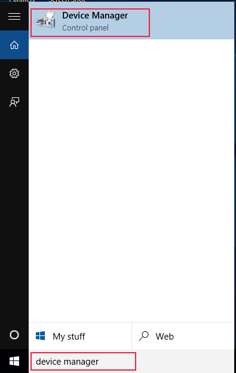

Terminal
Terminal merupakan modul penghubung antara Handphone atau Modem (selanjutnya disebut Perangkat) dengan software OtomaX, 1 Terminal untuk 1 Perangkat. Untuk membuat Terminal:
- Pastikan jumlah Terminal belum mencapai batas maksimal, misal OtomaX Anda adalah edisi Standard, maka hanya bisa membuat Terminal sebanyak 10 buah, info selengkapnya silahkan klik disini.
- Pastilah telah memasukkan Simcard ke Perangkat.
- Pastikan telah menghubungkan Perangkat ke komputer dengan menancapkan kabel USB/Serial dan menginstall drivernya.
-
Klik tombol Start Windows, pada box Search ketik device manager, kemudian klik Device
Manager:
 Windows 7, Windows 8 Windows 10 Perhatikan COM## (dimana ## ialah berupa angka) misal Perangkat Anda di COM11:


- Masuk ke OtomaX, pilih Terminal -> klik kanan -> klik Tambah Terminal... -> kemudian lakukan sesuai petunjuk di gambar bawah ini:
- Selesai.
Jikalau jumlah Terminal telah maksimal dan ingin menambah Terminal, Anda dapat melakukan upgrade OtomaX, tata caranya silahkan klik disini.